The State Mecca Bingo Players Questions for Camden Arts Center project with Anna Best
How long have you been playing bingo?
when and how often do you play?
do you play bingo to win, and/or to have a social time, or both?
Do you do the lottery? play the fruit machines/bandits, bet on the horses etc.?
Why is bingo different from these?
what's the most you've won?
What did you spend your winnings on?
How many books do you play at a time?
Do you trust the random number generator more or less than the ball machine?
what do you think of the callers?
Do you have any lucky numbers, colors of pen, place to sit, or any good-luck charms or habits?
Would you describe yourself as superstitious?
What would you say you believe in, are you religious, do you believe in God?
If you could have one MIRACLE what would it be? (if it's to win money what woul you spend it on? describe an image)
have you ever dreamt about winning or bingo in your sleep?
What do you think of the State, the decor, environment, building and atmosphere?
1/47
Questionnaires
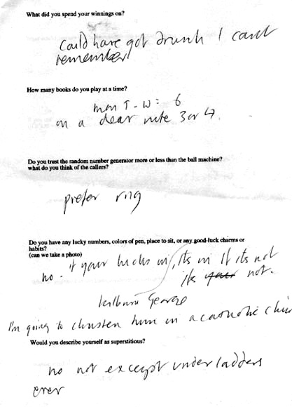
Questionnaire 2/47
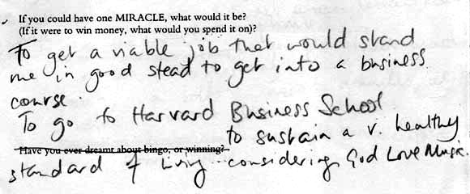
Questionnaire: Miracle 3/47
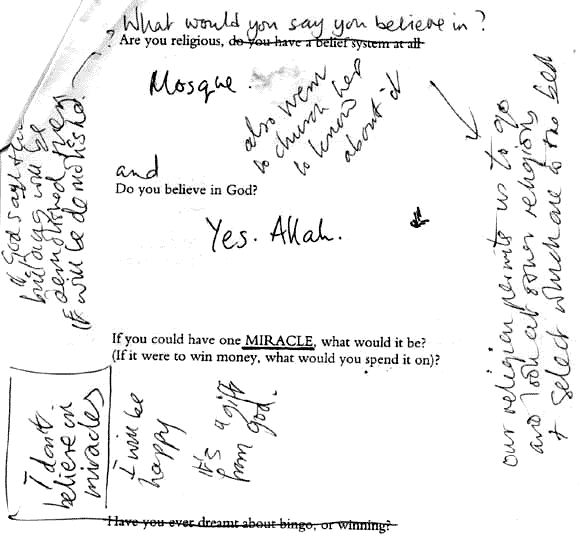
Questionnaire 4/47
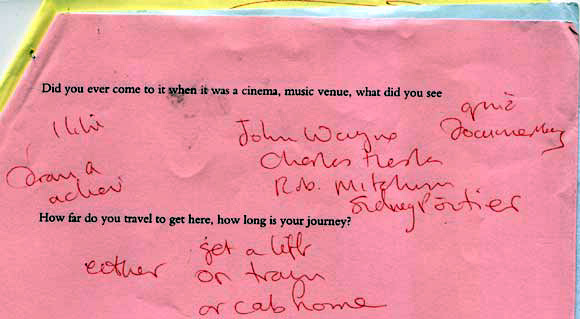
Questionnaire 5/47
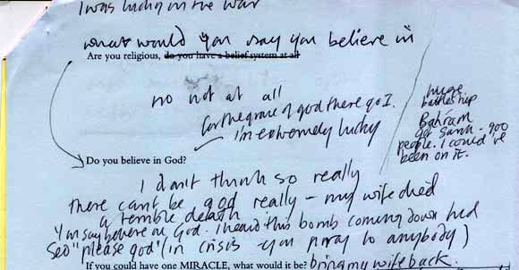
Questionnaire 6/47
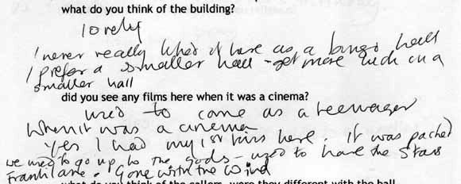
Questionnaire 7/47
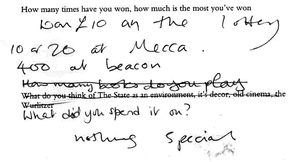
Questionnaire 8/47
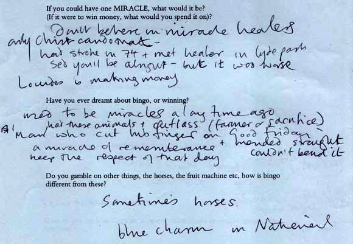
Questionnaire 9/47
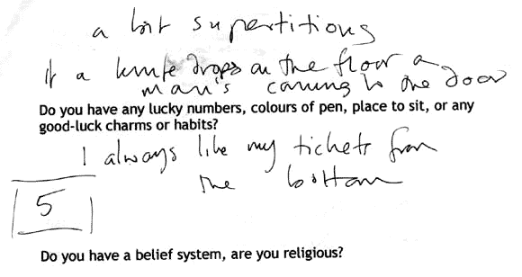
Questionnaire 10/47
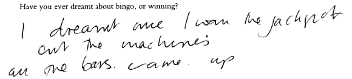
Questionnaire 11/47
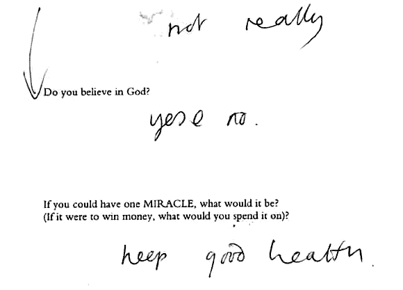
Questionnaire 12/47
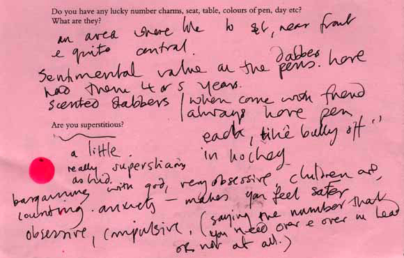
Questionnaire 13/47
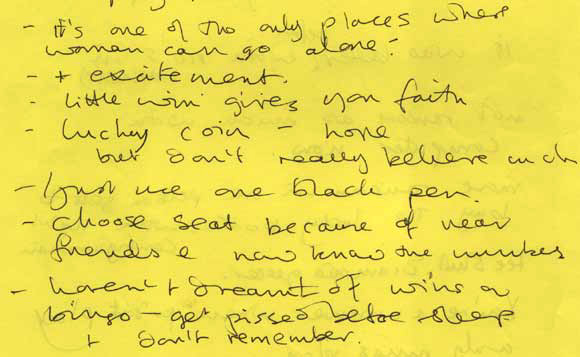
Questionnaire 14/47
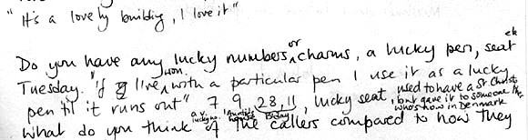
Questionnaire 15/47
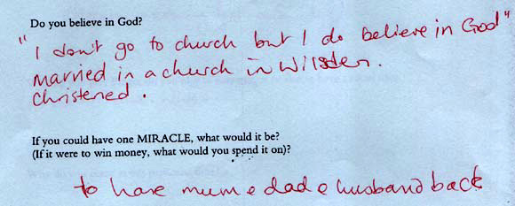
Questionnaire 16/47
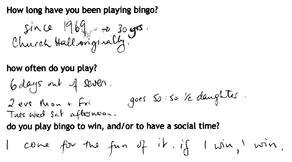
Questionnaire 17/47
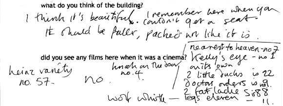
Questionnaire 18/47
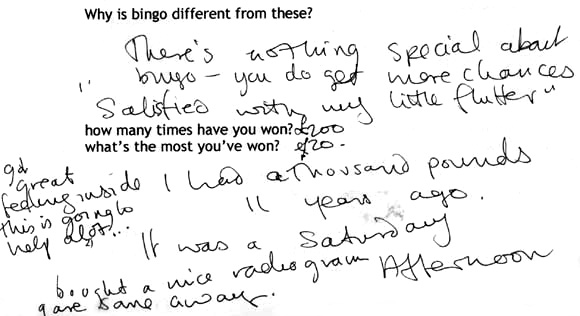
Questionnaire 19/47
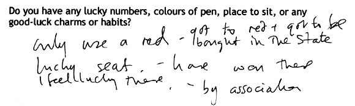
Questionnaire 20/47
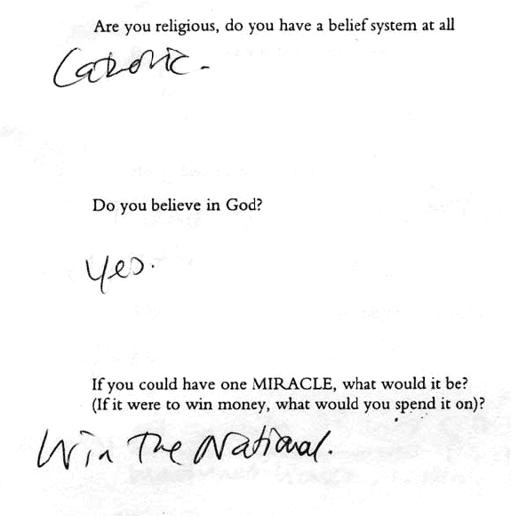
Questionnaire 21/47
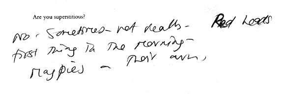
Questionnaire 22/47
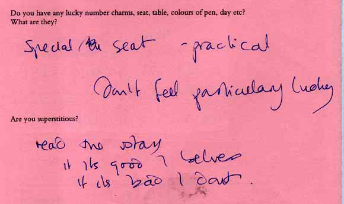
Questionnaire 23/47
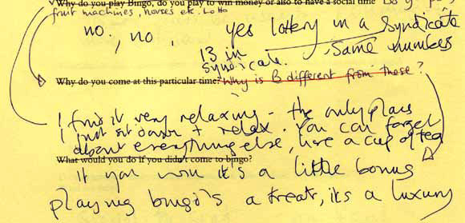
Questionnaire 24/47
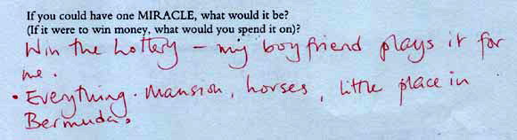
Questionnaire 25/47
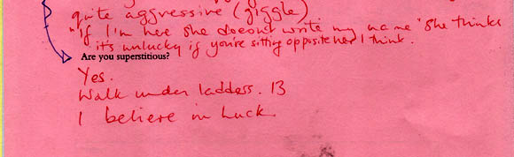
Questionnaire 26/47
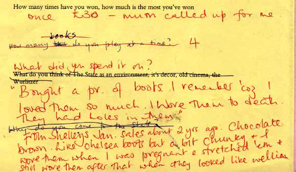
Questionnaire 27/47
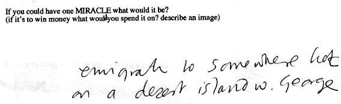
Questionnaire 28/47
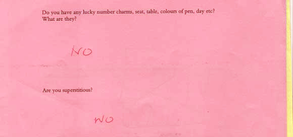
Questionnaire 29/47
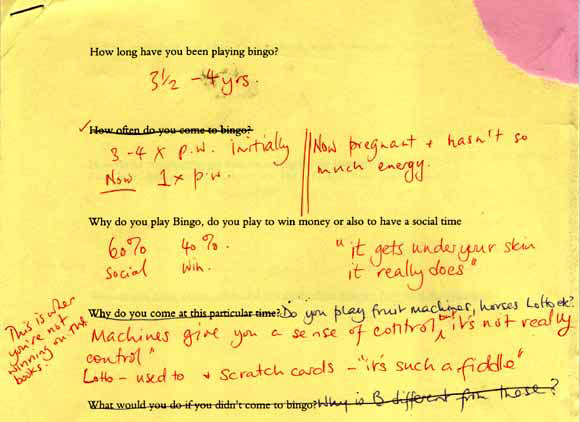
Questionnaires 30/47
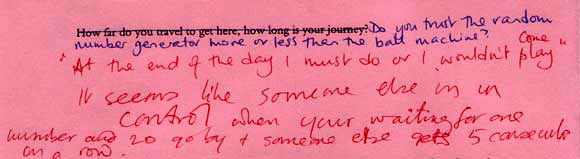
Questionnaire 31/47
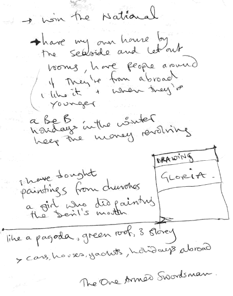
Questionnaire 32/47
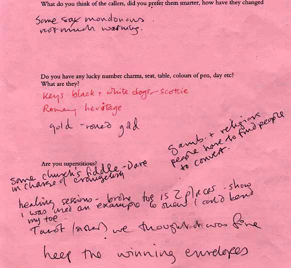
Questionnaire 33/47
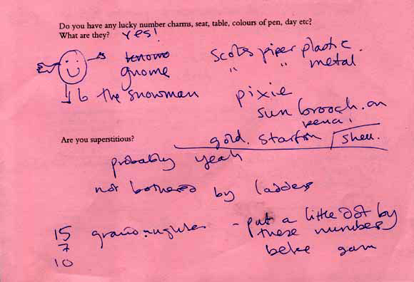
Questionnaire 34/47
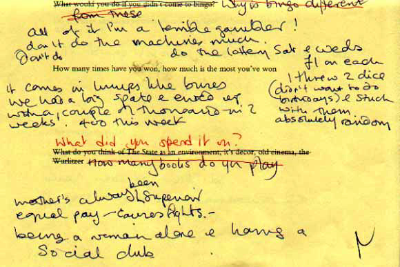
Questionnaire 35/47
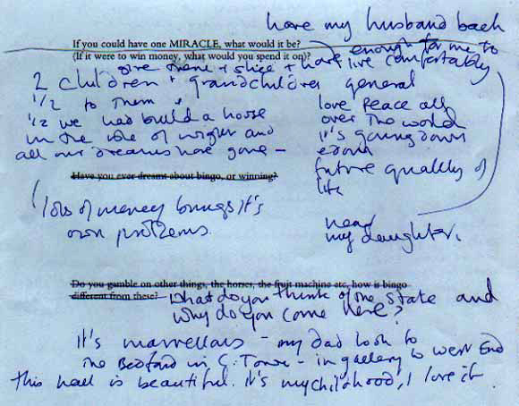
Questionnaire 36/47
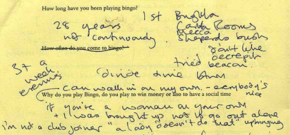
Questionnaire 37/47
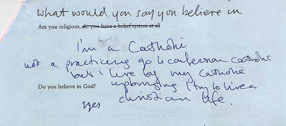
Questionnaire 38/47
Images found in the answers
Images found in answers
1.Maureen I had my first kiss here (when it was a cinema) saw Frankie Lane, Gone With The Wind (clip?) lucky numbers 21, 27, 11 childrens birthdays because that’s my grandson learning to count miracle - good health for family then winning loot who wants to be kissed in a bingo hall? (pose a kiss in back of hall) charms - glossy stones; pink and turquoise stone= love oneself
2.Claire brown boots miracle would be to have everything horses, mansion, little place in bermuda loot wanted a pair of... then slide
3.Grace not superstitious about ladders lucky numbers - no. of my door and my birthday miracle would be to go on holiday
4.Miss Joy at Coronation bingo you get free clocks loot - clock - will collect miracle cure for all sickness, people to recover from leprosy
39/47
5.Donovan Anthony "if your chance is there to win you will win" "no man or priest can save your soul" Blue Charm in the National - nearly lucky (Karen has video) "a man who sacrificed a lamb on Good Friday cut his finger with the knife, when it mended it was straight and he couldn’t bend it at all - "a miracle of remembrance. Keep the respect of that day"
6.lady who did not give name "If a knife drops on the floor a man is coming to the door"
7.Gladys lucky sovereign and chain been to organ conerts prefers ball machin "take it as it comes" I dreamt I won the jackpot, all the bars came up (film, or do drawing of all the bars).
8.Winifred dreamt I won the National Game; 90,000 (footage of a winner)
9.Karen sentimental value of dabbers; before game does like bully off in hockey (film bully off dabbers) miracle would be to win on a complicated bet on horseracing like heinz 57 diff. combinations (video of horse race)
40/47
10.year old man "why am I so unlucky and others so lucky?" - 14 years ago saw film with Steve McQueen"Bullet" with longest car chase Mustang and Plymouth Fury.
11.Gloria lucky charms - keys(?) black and white scottie dogs gold, rolled gold winning envelopes "I was used in a healing session as proof, I'd broken my toe on twoplaces and it mended and I stood on stage and bent it" "without Him I wouldn't get any wins" "missed a bet on menny ha ha Freddie Starr's horse, I always get them coming in second, I can't get a winner" "My whole family gamble daily, you get strings of luck" miracle have my own home by the seaside and let out rooms; a B&B. Like a pagoda, green roof, three storey (existing building she'd like to have) Paintings from churches - a painting by a girl of the devil's mouth. The One Armed Swordsman
12.Jeanette "used to work with fleet of vehicles, had to register all the numbers of the number plates" "little win gives you faith" lucky Coin miracle to win the lottery, not an awful lot of money black pen for marking
41/47
13.Mrs Kaye unlucky numbers 16 and 29, our (her and husbands?) birthday numbers
14.John "If I've won with a particular pen, I'll use it til it runs out lucky no.s - 7, 9 (aunties house), 28, 11 (birthdays), lucky seat, used to have a St Christopher but gave it to someone who's now in Denmark. Superstitious about black cats, Friday 13th and Ravens flying accross your path - bad luck. dreamt about winning 100,000, Marking the last number and going beserk miracle to have back my auntie and me mums mum
15.Jean Mum used to work here, met Margot Fonteyn Chandelier in main entrance now in buckingham Palace Write down list of numbers that your waiting for... miracle - to have mum, dad and husband back
16.Margaret If I win, I win. lucky charms - mum's st christopher, horseshoe carry around in bag miracle for youngest daughter who "if anything goes she gets it" redundancy and cut a ligament on glass shattering in her hand
42/47
17.Bridie "I like the game,I love bingo" "will I use my green pen or will I use my blue pn for a certain game" no. 2's my daughters lucky number Someone gave me a little statue of St Patrick, "you'll be lucky with that now", and I didn't win and so I put him into the cupboard at home miracle happiness and peace in the world
18.Maureen saw an old film with Bing Crosby and stars on the stage deja vu, when you feel like you've already seen something before, even on TV lucky No. 11, lucky days "I'm going to win tonight" miracle - win lottery or national treat family, nice holiday; barbados and caribean cruise, pay off debts,
19.Loiusa came when couldnt go bowling saw films with Gary Cooper (all his films), Clark Gable, Joan Crawford Can't say "I feel lucky" 'cos then you get disapointed miracle my husband back in health
43/47
20.Shirley in bingo 'you get so many chances for your stakes' when I came Alf Garnett was here Only use a red pen and its got to be bought in the State I have won in my seat and I feel lucky there miracle - for others, save the children in the war
21.Elizabeth lucky charm is an Elephant, they bought it back from holiday. I missed out omn the national with it, They called 39, I wanted 40 Red Heads first thing in the morning - good luck, magpies on their own miracle to win the national
22.Kathleen "the only place I just sit down and relax. You can forget about everything. If you win it's a little bonus. Playing bingo's a treat, its a luxury. " Saw The Rainman - movie "I read the Stars: if its good I believe if its bad, I don't" miracle "that my mother wouldn't have her illness and my dughters 3rd baby will be okay If I won a pot of money>family, charities, Macmillans, Hospices
44/47
23. Pat the kids birthdays lottery pen with all balls in one end lots of holidays, Norfolk Broads, Butlins, Sunshine holiday Camp my youngest daughter's central heating broke so I gave her £200 saw Close Encounters in the cinema Bill Haley at the State and everybody jiving in the aisles "Pedro the Fisherman" lucky charms LOADS scots pipers, pixie, sun brooach, gold starfish. shell. gnome, snowman lucky numbers 15, 7, 10 (grandughter) i put a little dot by these numbers before the game Miracle - youngest to daughter to fall pregnant, if i won money; buy her IVK
24. bloke justine talked to won 3 x and £343 exactly miracle - to get a viable job in order to go to business school, go to harvard business school "The State artwork is devilish"
25. Mohammed first time ever in a mecca or a bingo hall lucky day - 11/9 and no. is 38; roll no. at Uni. "Dont believe in miracles - i will be happy it's a gift from god"
45/47
26.Patricia made a friend heer who'd won 1000 the night before. lotsof friends here. lottery uses same randon numbers she threw 2 dice to get them winning comes in lumps like buses social club for woman alone saw pantomime every christmas "in bingo you only have unlucky numbers" "what will be will be" miracle to have my husband back, if I won money, I'd give the half to the children and grandchildren, enough fo rme to live comfortably, near my daughter we had wanted to build a house in the isle of wight and all our dreams are gone love and peace all over the world future quality of life Kaluki - 13 card game like rummy originated Turkey
27. Betty always pick randon no.s for lottery when won got new sitting room carpet charm- cross in purse always, given to me by an old lady as a good luck charm dreamt about the 2and half thousand win (3 years ago at Mecca), when i won it jogged my memory and i dreamt about the number 27 if I won lottery spend it on my children, a house and car and give to church
46/47
28. Winifred dreamt I won the national game, 90,000 at the prince of wales and I gave nearly all the money away caller used to wear red cummerbund, white silk shirt, red bow tie, black suit ans stand on stage pray to win miracle to make dream come true and win the national
29.Leonie john wayne, hjarlton heston, robert mitchum, sidney oitier "bingo has a turn and a time" miracle win the national give to charity, friends, people who need it good health
30.Alf winning no.s were 4 and 7; 47 singer Jean Kent 82 lucky number 'might be lucky going under ladders' Huge battleship Bahram, got sunk, I could've been on it. Heard a bomb coming down and said please god (in a crisis you pray to anybody) I'm extremely lucky miracle "bring my wife back, the greatest wife in the world"
31. Mary now I'm pregnant 'it gets under your skin it really does' "Machines give you a sense of control" lotto and scratch cards miracle"for my life to be completely sorted out"